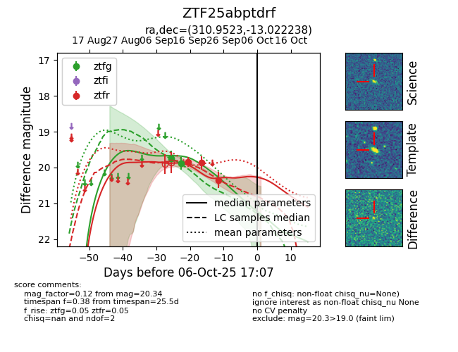
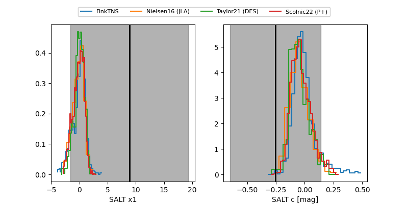

FINK: ZTF25abptdrf
Lasair: ZTF25abptdrf
ALeRCE: ZTF25abptdrf
ZTF25abptdrf (ztf,fink)
equatorial (ra, dec) = (310.9523,-13.02224)
galactic (l, b) = (33.5093,-30.73482)


last ztfg=19.88, ztfr=20.34
2 ztfg, 3 ztfr detections